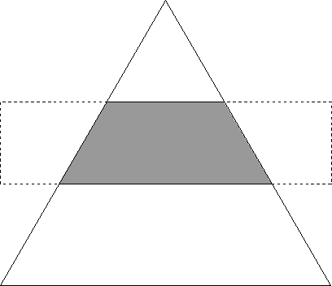

The clip path defines the clipping boundary in world coordinate space. Paths are graphic objects that serve many purposes, only one of which is to be used as a clipping mechanism. Paths are described in Paths. The recommended functional sequence for creating a clip path is as follows:
Function
Before converting to a clip path, the path can be modified using GpiModifyPath. If modified, the path is converted to a geometric (wide) line using the current geometric width, line join, and line end attributes. The shape defined by the geometric line then is used for the clip path. The clip path can be a simple unmodified path.
GpiSetClipPath accepts two different path identifiers as input:
The default path identifier, SCP_RESET, resets the clip path to infinity, which displays the picture without clipping. If this value is selected, the current clip path definition is discarded instead of stored.
A path identifier of SCP_AND specifies that the clip path be redefined as the mathematical intersection of the stored clip path and the current path definition.
The only method of specifying the clip path to the current path, after GpiSetClipPath has been called, is to call GpiSetClipPath twice: the first call with a path identifier of SCP_RESET, and the second with a path identifier of SCP_AND.
The following figure shows a triangle shape that has been defined within a path bracket and selected as the current clip path. The filled box shape is drawn subsequently, and, therefore, is clipped to the triangle.
The Clipping Path
The broken lines show the area of the box that has been clipped.
Clip paths are most useful when you want to use an irregular clipping boundary, or when the clipping boundary itself is an integral part of the picture. Both are true of the clip path in the previous figure.
GpiSetClipPath also accepts one of two construction options as input:
Any drawing that is clipped to the current clip path must follow the alternate or the winding rules as to whether that portion of a picture is included in the clip area. The alternate and winding modes are described for paths in Paths in Alternate Mode and Paths in Winding Mode. Any point on the boundary of the path is considered within the path and is not clipped.
To end clipping to the current clip path, call GpiSetClipPath with an identifier of 0. This function deselects the current clip path by setting it to infinity. In some circumstances, the current clip path is deselected automatically.
A path definition can be stored in a graphics segment, and if that segment is retained, the path can be re-created as required when the segment is redrawn. Clip path definitions can be stored in a retained segment also and redrawn when required. In draw-and-retain mode (DM_DRAWANDRETAIN), the initial path or clip path is created as the segment is constructed. If the current drawing mode is retain (DM_RETAIN), however, the path or clip path is not created until the first time the segment is drawn.